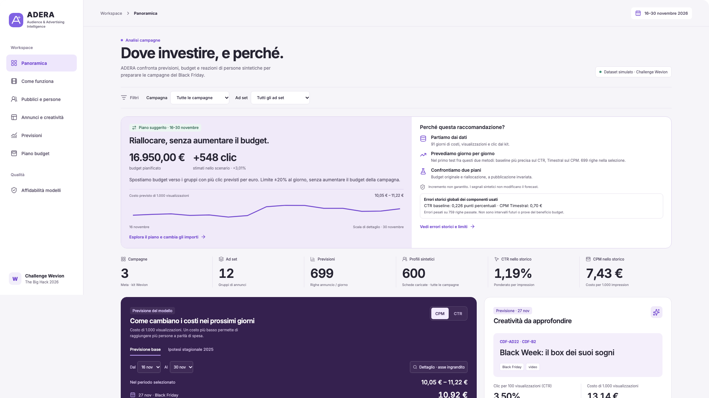

ADERA / Una domanda prima del budget
E se potessi testare
una campagna
prima di investirci?
La tua campagna
?

Prima di investire,
capisci.
Un workspace, due prospettive
Numeri.
Persone.
Prima della campagna.
Dati simulati della challenge
Partiamo dai dati.
699
righe di forecast
3 settori
12 ad set
Forecast / CPM · FGR-AD09
Segui la previsione.
16–30 novembre 2026 · serie salvata
27/11/2026
Black Friday
30/11/2026
Cyber Monday
Modelli / confronto verificato
Prevedere.
Poi confrontare.

Timestral 28M
CPM nell’export corrente
CTR: baseline pesata a 14 giorni
CatBoost
Validazione temporale separata
Orchestrazione
T3 Code coordina.
Gli agenti collaborano.
 T3 Code
T3 CodeCoordinatore
 Claude
ClaudeAgente nel workspace
Gemini
Profili e interviste
 ChatGPT
ChatGPTAgente nel workspace
Un pubblico sintetico
Profili diversi.
Esigenze concrete.
abbigliamento-P001
Chiara Bellini, 46
Tecnica di laboratorio · Padova
Cerca praticità, misure chiare
e reso senza complicazioni.
Feed simulato / Gemini Decision 1
La campagna,
nel suo feed.
Card illustrative da descrizioni del kit.
Chiara × FGR-U3
Probabilità simulate, non CTR.
600 profili sintetici verificati
Una persona.
Molte prospettive.
Dalle reazioni ai segnali
Una traccia leggibile.
Scorre
Si ferma
Cerca informazioni
Segnali qualitativiCosa conta
Cosa conta
per Chiara
Reso semplice.
Materiali espliciti.
Meno pressione.
Intervista sintetica / Chiara · FGR-U3
T3 Code→Gemini · intervistaCosa apprezzi? Cosa ti allontana?
Cosa apprezza
Cosa la allontana
Il workspace ADERA
Numeri e ragioni.
Distinti, leggibili.
←

Analisi quantitativa
Forecast CTR e CPM
Validazione temporale
Segnali qualitativi
Reazioni simulate e interviste
Ipotesi da testare sul campo